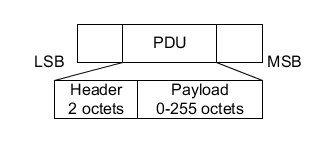

The test packet PDU is subdivided into a PDU header and the payload field. The PDU header indicates the payload content type (RF_PHY_TestRef) and the payload length expresses in octets.

LE test packets are described in the "Air Interface Packets" section of core specification for Bluetooth wireless technology, volume 6, part B.
The advertising channel PDU has a 16-bit header and a variable size payload.
The PDU header indicates the payload content type, the payload length expresses in octets, and information related to the PDU type.
The R&S CMW allows all advertising channel packet types defined in Bluetooth specification version 4.2 to be measured in payload-independent measurement mode. The supported PDU types, are listed in the following table.
Advertising PDUs | ADV_IND, ADV_DIRECT_IND, ADV_NONCONN_IND, ADV_SCAN_IND |
Scanning PDUs | SCAN_REQ, SCAN_RSP |
Initiating PDUs | CONNECT_REQ |
For advertising packets, the R&S CMW supports only LE 1 Msymbol/s uncoded physical layer (LE 1M PHY) and only primary advertising channels.